Halo Semuanya, Saya Kelvin Rohmat Setiaji
IoT, Full-Stack & Embedded Systems Developer
Saya adalah mahasiswa Sarjana Terapan Teknik Telekomunikasi di PENS yang mengintegrasikan dunia nirkabel, sistem tertanam, dan arsitektur web modern untuk membangun solusi digital yang berorientasi dampak.

Keterampilan & Tech Stack
Bahasa Pemrograman
Web Framework & Database
Mobile, Embedded & Hardware
Pengalaman & Pendidikan
Full Stack Web Developer
Membangun sistem portal pemasaran terpadu berbasis web untuk Kelompok Tani (Poktan) Banyu Urip guna mempermudah akses pemasaran produk dan memperluas distribusi secara digital.
Embedded Systems & Web Developer
Mengembangkan infrastruktur website pemetaan data transmisi Automatic Identification System (AIS) berbasis RTL-SDR receiver untuk menangkap koordinat sinyal kapal laut dan divisualisasikan real-time.
Robotics & IoT Engineer
Merancang dan mengimplementasikan modul kendali nirkabel serta perakitan mekanik untuk Robot Mobil RC (Radio Controlled) dengan latensi kontrol minimal berbasis ESP32.
Programming Division
Mengembangkan sistem kendali penerbangan otonom untuk UAV (Unmanned Aerial Vehicle) dan konfigurasi telemetri komunikasi jarak jauh EARO.
Staff Operasional (Perkab)
Mengelola operasional perlengkapan, logistik, penyediaan peralatan, dan persiapan teknis panggung untuk seluruh rangkaian kegiatan Dies Natalis PENS ke-37.
Staff Operasional (Perkab)
Menyiapkan sarana prasarana, perlengkapan stand kompetisi, tata ruang pameran, serta distribusi logistik bagi peserta dan juri Final Project Competition.
Hardware & Control Programmer
Mendesain algoritma PID controller presisi tinggi untuk Robot Line Follower otomatis, meningkatkan akurasi pembacaan sensor photodioda, dan mempercepat respons pergerakan motor DC.
Frontend Web Developer (Internship)
Mengembangkan arsitektur antarmuka (Frontend) untuk aplikasi web E-Procurement berskala enterprise untuk SILOG Group demi efisiensi pengadaan barang secara digital.
Full Stack Developer
Membangun sistem "E-Legalisir Digital" untuk mempermudah alumni dalam legalisasi berkas secara online, serta merancang platform "Sistem Manajemen Inventaris Barang Aset" untuk efisiensi audit inventaris di setiap laboratorium sekolah.
Mobile & Web Developer (Internship)
Mengembangkan dan meluncurkan sistem E-Commerce terintegrasi untuk UMKM Kota Batu dalam bentuk website & aplikasi mobile. Berkontribusi aktif pula pada tim developer utama dalam membangun website resmi kompetisi KMIPN-V (Kompetisi Mahasiswa Informatika Politeknik Nasional).
Active Member & Speaker
Menjadi partisipan aktif komunitas sejak 2021 dalam diskusi coding dan project sharing, serta naik menjadi Pemateri Komunitas (2023-2024) membawakan materi seputar pemrograman web dasar.
D4 Teknik Telekomunikasi
Mendalami rekayasa sistem transmisi nirkabel, jaringan komputer, pemrosesan sinyal digital, mikrokontroler canggih, radio telecommunication (RF), serta integrasi IoT. Aktif berpartisipasi dalam UKM Robotika & Riset.
Rekayasa Perangkat Lunak (RPL)
Dasar-dasar rekayasa perangkat lunak, perancangan basis data relasional, pemrograman orientasi objek (OOP), pemrograman web statis/dinamis, pengembangan aplikasi desktop, dan mobile.
Repositori Proyek

Portal E-Commerce Tani
Website e-commerce terintegrasi untuk mendigitalisasi alur pemasaran hasil tani Poktan Banyu Urip dengan dashboard inventaris real-time.
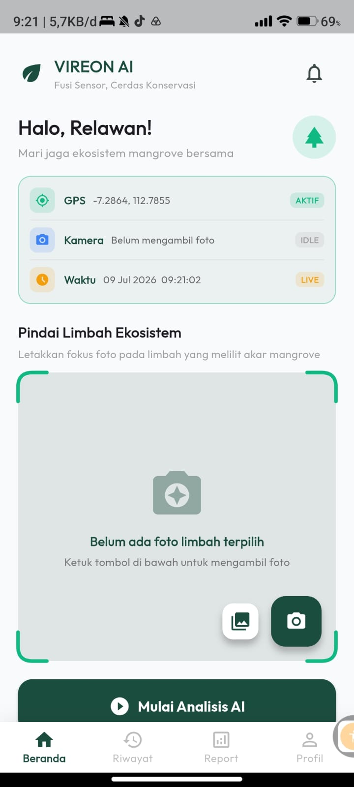
KMIPN VIII Smart Incubator
Pengembangan model inkubator presisi budidaya hortikultura untuk ajang KMIPN VIII Cabang Piranti Cerdas, dilengkapi sensor MQTT.
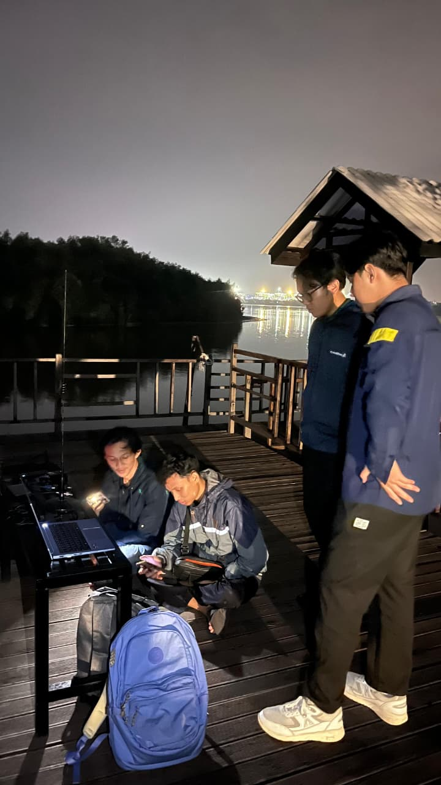
AIS SDR Vessel Mapping
Sistem pemetaan data transmisi Automatic Identification System (AIS) real-time menggunakan antena penangkap frekuensi RTL-SDR dan visualisasi koordinat kapal di peta interaktif.
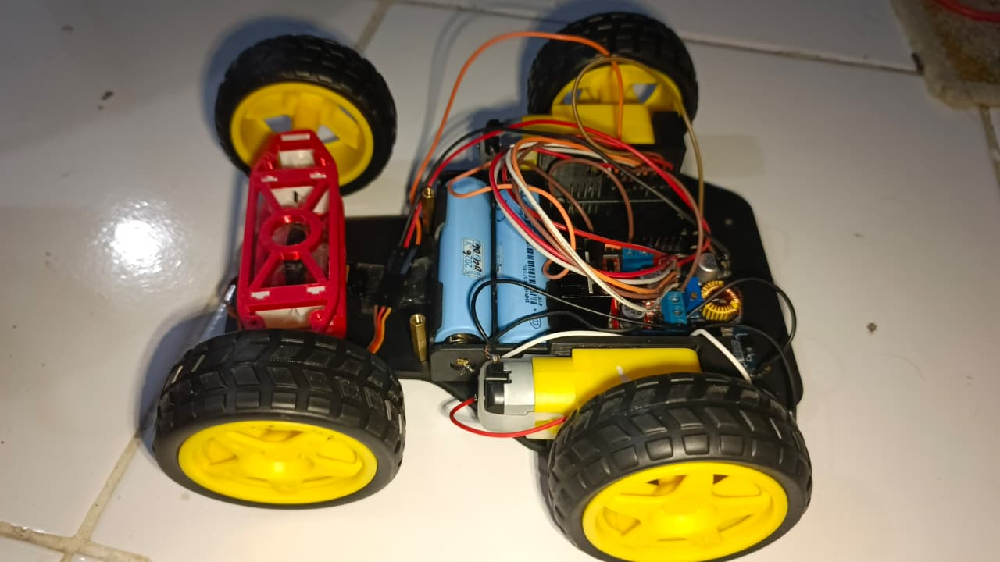
ESP32 RC Mobile Robot
Perancangan sasis mekanik dan transmisi sinyal remot kontrol berbasis protokol nirkabel ESP-NOW 2.4GHz dengan latensi respons mendekati nol.
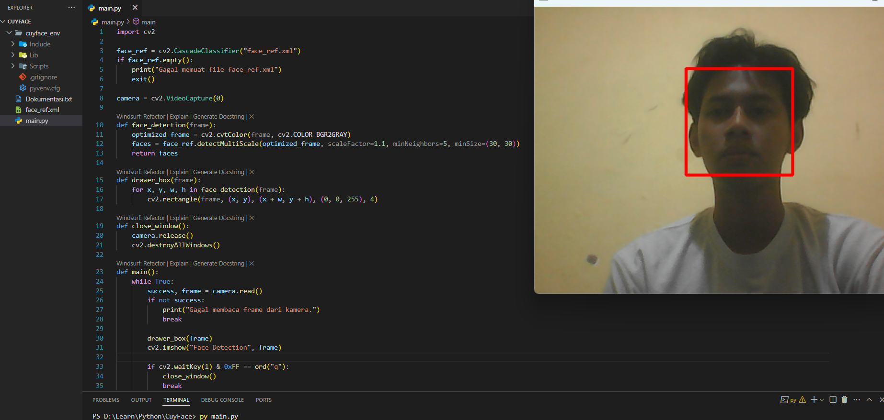
AI Face Rec Smart Attendance
Alat pencatatan presensi siswa otomatis di kelas menggunakan pengolahan citra OpenCV pada modul kamera mini Raspberry Pi 4.
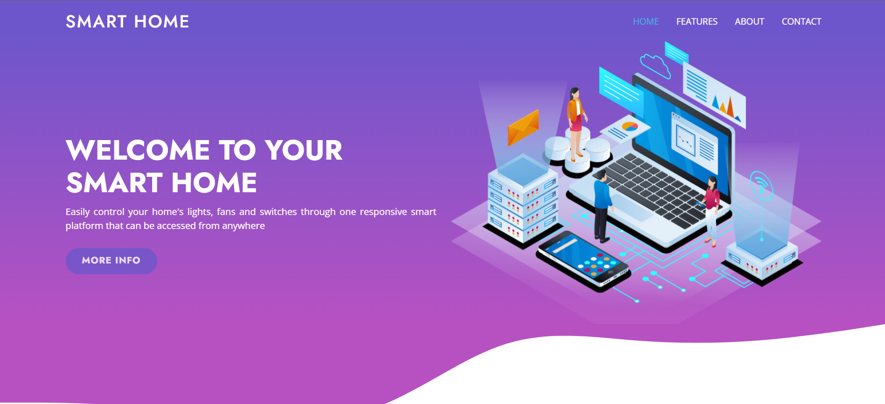
IoT Smart Home & Weather
Sistem otomasi saklar listrik nirkabel dan dasbor pemantauan kelembaban/suhu ruangan real-time berbasis ESP32 dan Firebase database.
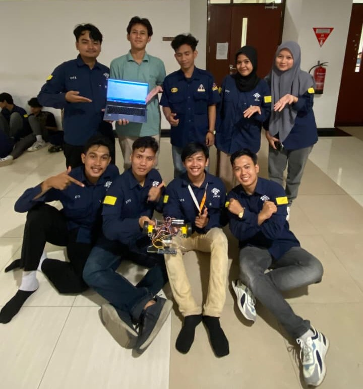
Line Follower PID Robot
Pemrograman robot penjejak garis otomatis berbasis STM32 dengan implementasi umpan balik PID controller untuk akurasi manuver tikungan tajam.
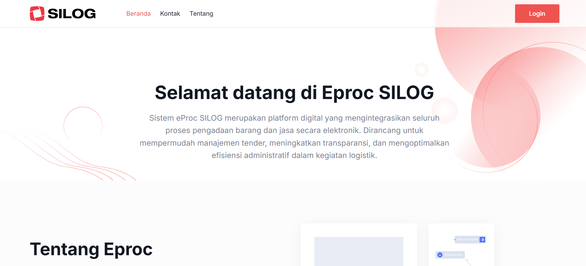
E-Procurement SILOG Group
Pengembangan frontend modul pengadaan barang digital berskala korporat, mengoptimalkan proses approval berkas, kalkulasi vendor, dan pelacakan status pengiriman logistik.
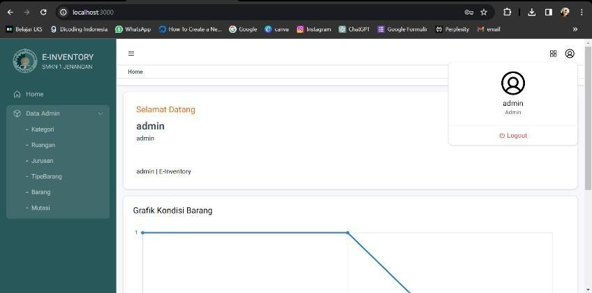
E-Legalisir & Inventaris Lab
Dua platform terpisah berbasis Laravel untuk efisiensi administrasi tanda tangan digital ijazah alumni online dan audit data aset lab di SMKN 1 Jenangan.
UMKM Batu E-Commerce
Aplikasi penjualan produk-produk lokal khas Kota Batu. Platform web e-commerce berbasis Laravel dan aplikasi mobile React Native konsumen.
Sertifikasi & Pelatihan
 Fundamental of Associate Network Administrator - DEX - Politeknik Elektronika Negeri Surabaya.png)
Fundamental Network Administrator

Workshop Wirausaha (PMW)

National Essay Competition

AI Praktis untuk Produktifitas

Samsung Innovation Campus

Dies Natalis PENS ke-37
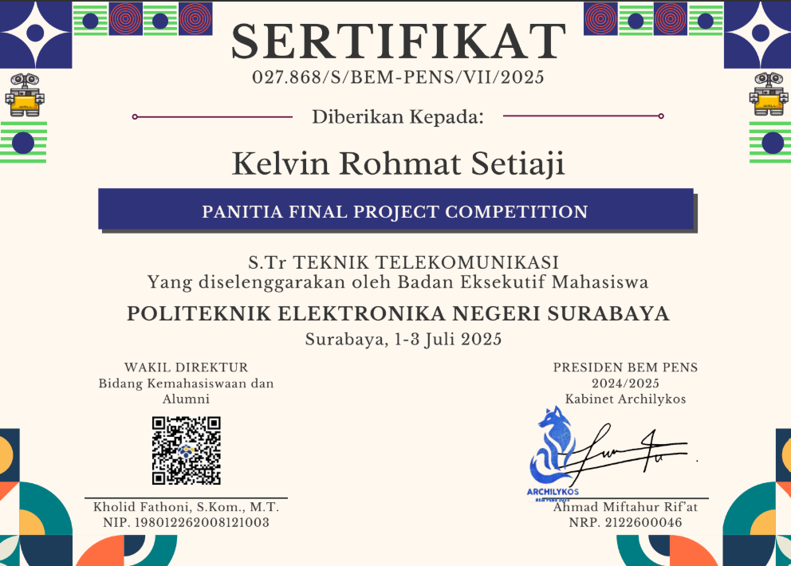
Final Project Competition
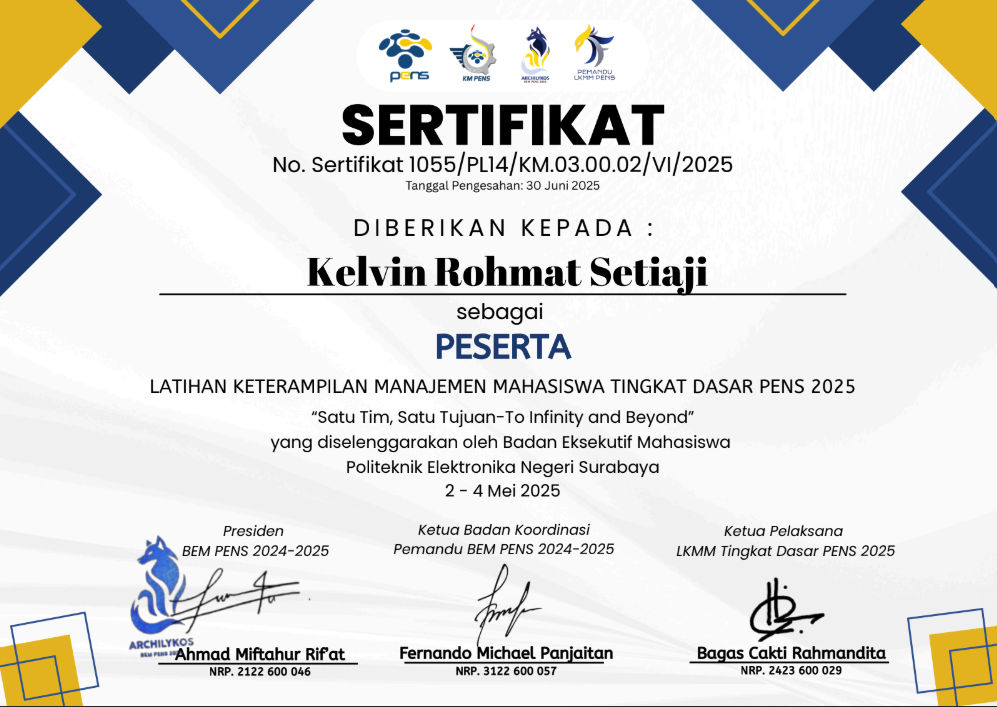
LKMM-TD PENS

LKMM Pra-TD PENS
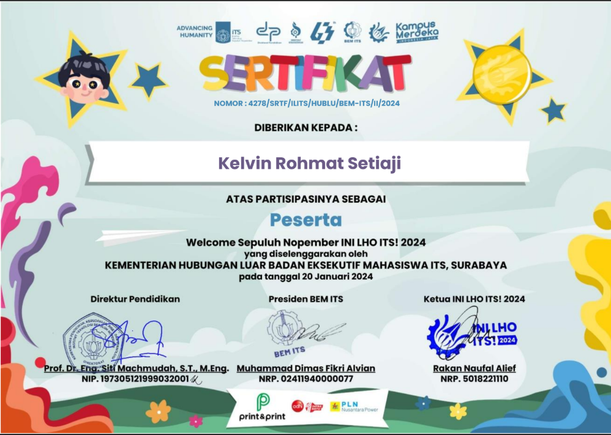
ILITS
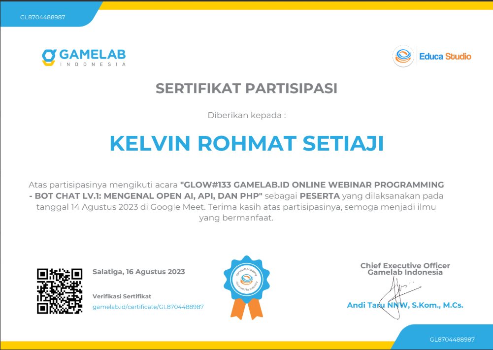
Online Webinar Programming

National Logic Competition
Hubungi Saya
Saluran Komunikasi
Silakan hubungi saya untuk kolaborasi proyek, diskusi teknis, atau kesempatan kerja melalui kontak berikut: